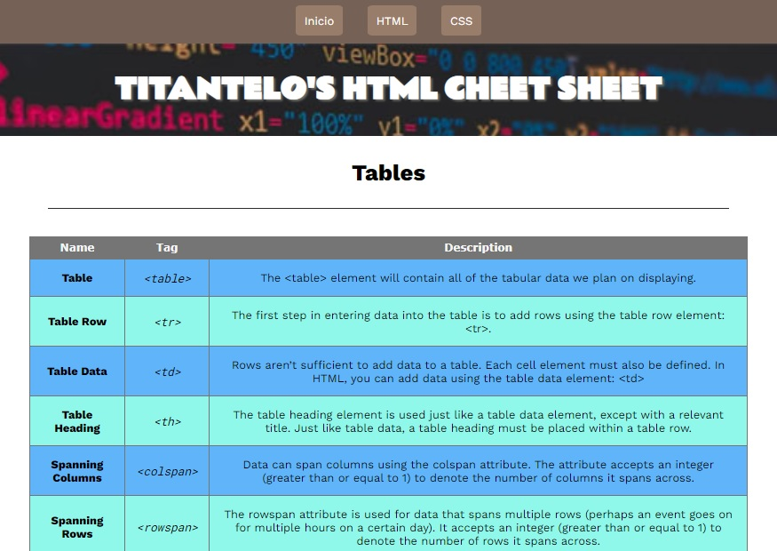
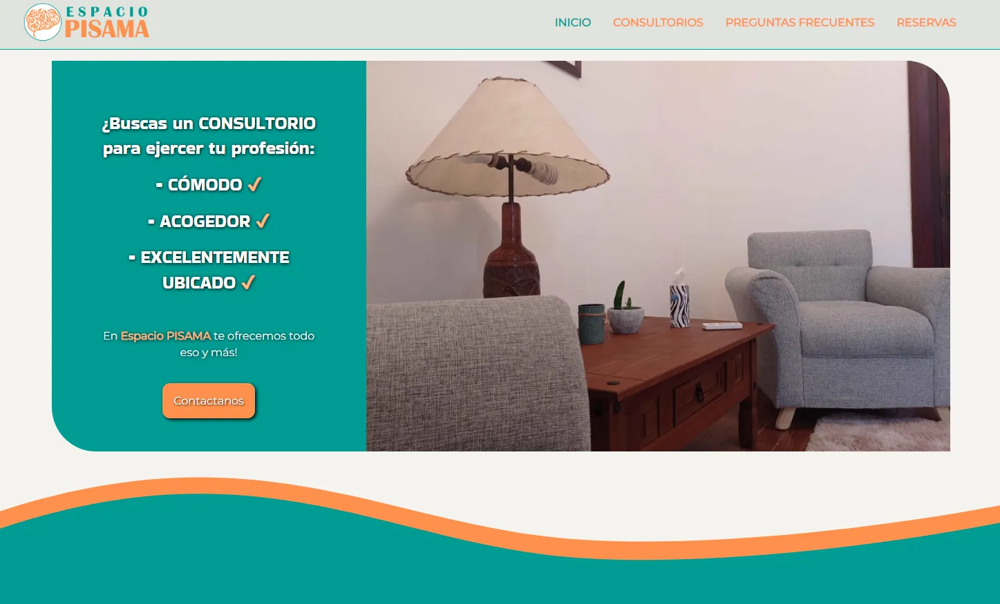

About me
Hello and welcome to my personal portfolio! I'm a passionate frontend web developer with expertise in HTML, CSS, Javascript, and React. Although my initial background was in psychology, I've always had a fascination for programming, and I finally decided to pursue my true passion in web development.
With a unique blend of psychology skills and technical programming knowledge, I offer a fresh perspective in creating intuitive and visually appealing user interfaces that enhance the web user experience. My approach is rooted in attention to detail, creativity, and problem-solving.
In my portfolio, you'll find a selection of my most recent projects, where I've applied my skills in HTML, CSS, Javascript, and React to create interactive and responsive web applications. I'm passionate about collaboration and teamwork, and I'm excited to share my skills and knowledge with you.
Thank you for visiting my personal portfolio page. I hope you enjoy exploring my projects and getting to know more about me as a frontend web developer! If you have any questions or are interested in collaborating, feel free to get in touch with me!
Skills

HTML

CSS

Javascript

React

NodeJS

MongoDB
SQL

Git
Github
Projects
Tables HTML Cheetsheet
Project's description
I created a website where I made a HTML cheatsheet for table creation using HTML tags. The purpose of this project was to practice HTML and CSS skills. The cheatsheet covers various table-related HTML tags and their usage, including table, tr, th, td, colspan, and rowspan. Users can easily refer to the cheatsheet for guidance on how to create tables with different layouts and styles. This project allowed me to deepen my understanding of HTML and CSS, and to showcase my ability to create practical and useful resources for web development.
Website preview
 Project LinkOffice Rental Website
Project's description
I created a website for professionals who are looking to rent office space. The purpose of this project was to practice HTML and CSS skills. The website features a clean and modern design, with clear navigation and easy-to-use search functionality. Users can search for office spaces based on location, size, amenities and price range.
This project allowed me to develop my HTML and CSS skills, and to showcase my ability to create a functional and user-friendly website. It also demonstrates my understanding of the importance of responsive design and accessibility for web development./p>
Website preview
 Project LinkOnline Tea Shop
Project's description
I created a website for an online tea shop that offers a wide variety of tea blends from around the world. The purpose of this project was to practice HTML and CSS skills. The website features a clean and elegant design that reflects the sophistication and quality of the tea products.
This project allowed me to develop my HTML and CSS skills, and to showcase my ability to create a visually appealing and user-friendly e-commerce website. It also demonstrates my understanding of the importance of responsive design and accessibility for web development.